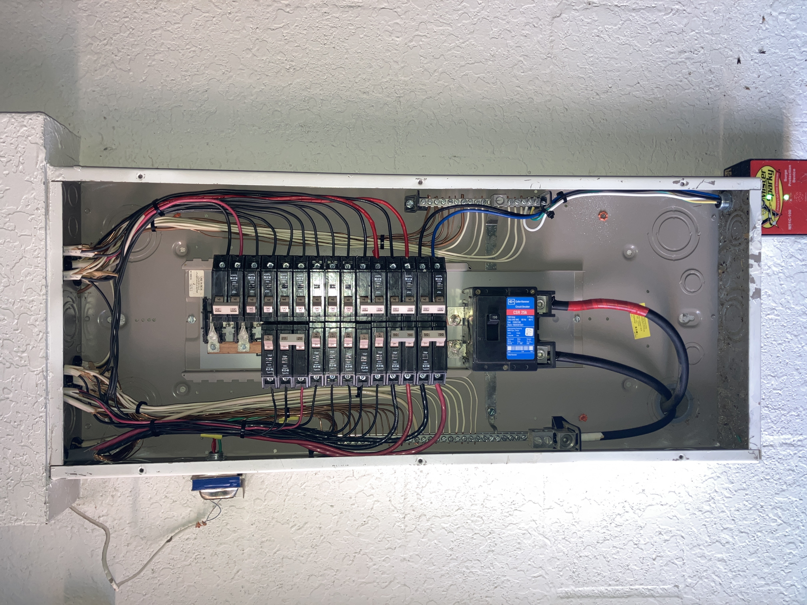
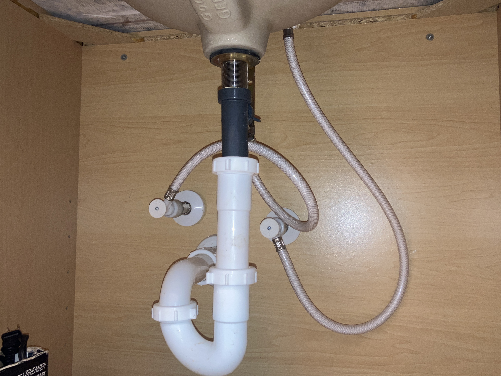

What’s Included in a 4 Point Inspection
Our four point inspection evaluates the four major systems insurance companies care about most: roof, electrical, plumbing, and HVAC. We provide detailed documentation for carriers serving Brooksville, Spring Hill, and Weeki Wachee.
Roof System
We evaluate shingles, flashing, penetrations, visible decking, and overall life expectancy.

Electrical System
Main panel, breaker types, visible wiring, and safety concerns are documented for insurance review.

Plumbing System
We inspect visible supply lines, drain lines, water heaters, and signs of leakage.

HVAC System
Heating and cooling systems are evaluated for age, condition, and functionality.